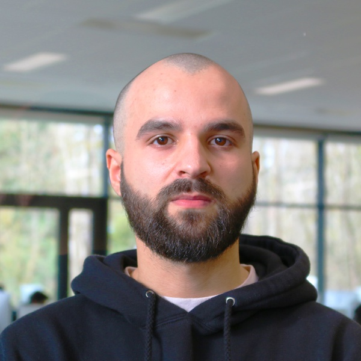

Johan Chevet
Je suis intéressé par le développement full-stack, avec un attrait
pour le back-end.
Education
Nov 2020 - Mai 2025
42 Lyon
- Programming languages: C/C++, JavaScript/TypeScript, C#, SQL
- Frameworks: NestJs, Angular, Dotnet
- Divers: Docker, Git
2012 - 2014
CAP Peintre applicateur de revêtements
Projets
Trancendance:
(PostgreSQL, NestJS, ReactTS)
Un site web dockerisé en équipe de quatre. Le projet comporte un
systeme de matchmaking pour un jeu et un chat en temps réel,
fonctionnant avec des websockets.
Matcha:
(ExpressJs, Angular, PostgreSQL)
Un site web d'application de rencontre dockerisé réalisé en équipe de
deux. La base de données a été implémentée sans l'utilisation d'un
ORM, en écrivant toutes les requêtes SQL et en créant des validateurs
pour la validation des données.
ClipSaver:
(ASP.NET Core, Angular, PostgreSQL)
Un site web dédié à l'upload et streaming de clips video sur serveur
local et Dailymotion.
Compétences, activités et intérêts
Langues
- Français langue maternelle
- Maîtrise de l'anglais
Soft skills
- Attention aux détails
- Résolution de problèmes
- Travail en équipe
- Adaptabilité
Intérêts
- Sport
- Fps compétitif
- Manga